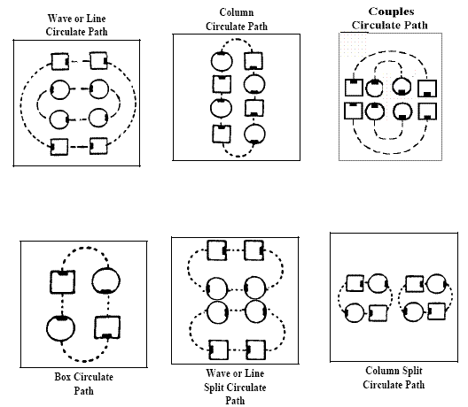

Circulate Family
Starting formation - waves, columns, lines and two-faced
lines. GENERAL RULE: Directed (active) dancers move forward along the circulate path to
the next position. The circulate paths for various formations are indicated by the dotted
lines in the diagrams.
-
BOYS CIRCULATE, GIRLS CIRCULATE, ENDS CIRCULATE, CENTERS
CIRCULATE: Directed dancers circulate using the general rule.
-
ALL 8 CIRCULATE: Starting formation - any 2x4 arrangement of
dancers including lines, waves, columns, 8 chain thru, and trade by. Dancers in a column
move forward one position on the column circulate path (see figure). Dancers in a wave or
line move forward one position on the wave or line circulate path (see figure).
-
COUPLES CIRCULATE: Starting formation - lines or two-faced lines. Each couple, working as a unit,
moves forward along the circulate path to the next position, using the general rule.
-
BOX CIRCULATE: Starting formation - box circulate. Each dancer moves forward along the
circulate path to the next position, using the general rule,
-
SINGLE FILE CIRCULATE
(COLUMN): Starting formation - columns. Each dancer moves forward along the circulate path
to the next position, using the general rule.
-
SPLIT CIRCULATE: Starting formation -
lines, waves or columns. The formations divide into two separate boxes and dancers
circulate within their own foursome, using the general rule.

There has been occasional confusion on the proper use of all of the circulates.
- From right- or left-hand columns, the following calls are equivalent and ask the dancers to
move forward one position on the column circulate path: SINGLE FILE CIRCULATE,
COLUMN CIRCULATE, ALL 8 CIRCULATE, EVERYONE CIRCULATE, or simply
CIRCULATE.
- From two-faced lines, the following calls are equivalent and ask the dancer to move forward
one position on the wave or line circulate path (which for two-faced lines is the same as the
couples circulate path): ALL 8 CIRCULATE, COUPLES CIRCULATE, EVERYONE
CIRCULATE, or simply CIRCULATE.
- From lines and waves, the following calls are equivalent and ask the dancer to move forward
one position on the wave or line circulate path: ALL 8 CIRCULATE, EVERYONE
CIRCULATE, or simply CIRCULATE.
- It is improper to call SINGLE FILE CIRCULATE from other than right- or left-hand columns.
COUPLES CIRCULATE is only called from right- or left-hand two-face lines.
- It is improper to teach that ALL 8 CIRCULATE always means that ends stay ends and
centers stay centers. This statement is true from lines and waves, but not from columns.
- It is improper to call ALL 8 CIRCULATE from columns and expect the center 4 dancers to
work together and the outside 4 dancers to work together.
- If the desired action is to divide the waves or columns into two separate groups, and have
each group perform a circulate-type action, SPLIT CIRCULATE is the correct term to use.
- If the desired action is to have the center 4 of waves, two-faced lines, or columns perform a
circulate-type action within the center, BOX CIRCULATE is a correct term to use, but it may
require naming those dancers. For example, Heads Touch 1/4; Heads BOX CIRCULATE, or
Pass To The Center; Centers Touch 1/4 and BOX CIRCULATE).
- It is improper to simply call BOX CIRCULATE from waves, lines, or columns. You must
specify who is to BOX CIRCULATE.
- From waves and two-faced lines, "CENTERS CIRCULATE", "CENTER 4, BOX CIRCULATE",
and "CENTER BOX OF 4, CIRCULATE" are all acceptable.
- From columns, "CENTER 4, BOX CIRCULATE" and "CENTER BOX OF 4, CIRCULATE" are
acceptable. "CENTERS CIRCULATE" is ambiguous and its usage should be avoided. It could
mean centers do your part of column circulate, or it could mean for the center 4 to circulate in
the center.
STYLING: All dancers use couple handhold when doing a couples circulate. Couples traveling the shorter distance should adjust with shorter steps to coincide with those traveling the longer distance. Those traveling the longer distance should avoid rushing. Arms should be held in natural dance position and ready to assume appropriate position for the next call.
Timing: From ocean waves (OW), centers, 4 steps; ends, 4 steps; all, 4 steps; couples, 4 steps.